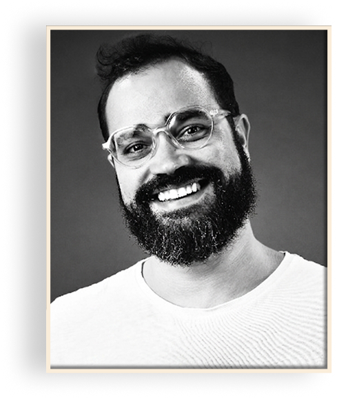
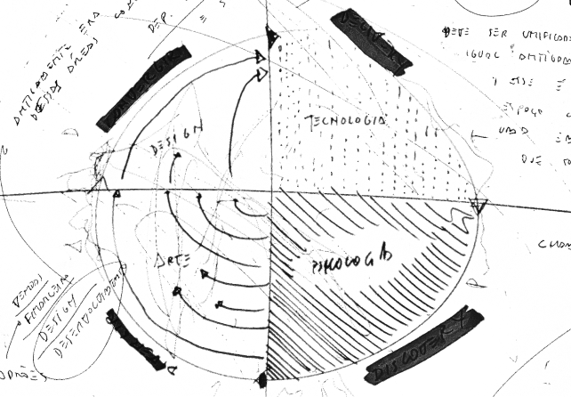
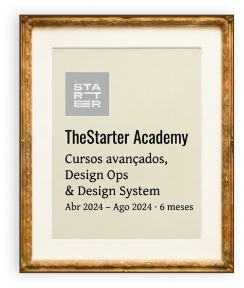
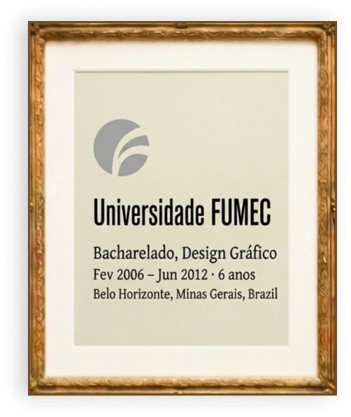
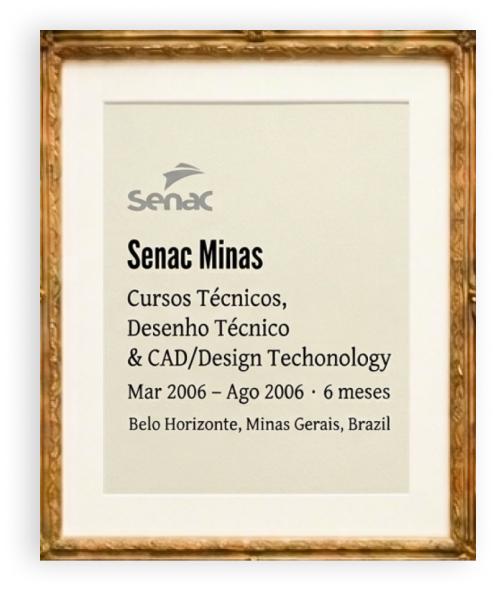

sobre
olá, mundo
Sou o Lucchesi: especialista em Design com mais de 15 anos de experiência em Product Design, Design Systems, Ops e Branding.
Atualmente, incorporo IA Generativa ao meu processo de Design: automatizo tarefas repetitivas, conecto design e código e testo novas formas de criar UI/UX. Gosto de processos e de ambientes organizados porque são eles que sustentam uma visão 360º do negócio. É assim que consigo conectar estratégia de crescimento à execução ágil, sem perder o rumo.
Essa cultura é transferida para um manual, mas precisa, sobretudo, de pessoas que tratem o negócio como se fosse seu: entendam as métricas, participem das decisões e assumam a responsabilidade pelo resultado, não apenas pela entrega. É essa visão de dono que carrego em cada projeto, mesmo quando o CNPJ não é meu.
Minha trajetória combina empreendedorismo, visão estratégica e muita mão na massa: já empreendi duas vezes ao longo da minha carreira, e foi isso que me ensinou a ter empatia pelo usuário e a me importar de verdade com o produto em que trabalho.
trabalhos
Design Systems Specialist
2026-2023
Na Hotmart, atuei em um ecossistema global, liderando iniciativas de Product Patterns e Design System. A partir de Discovery e pesquisas com colaboradores internos, transformei problemas de consistência em padrões de produto, conectando Branding, Design, Produto e Engenharia. Como resultado, o DS impactou mais de 30 times, +99 usuários internos ativos e, nota média de 8,7 de satisfação dos padrões de produto.
product Design Lead & Co-founder
2023-2019
Como empreendedor e líder de Design da Devopness, participei da construção de um SaaS concebido para operar em escala global. O desafio era transformar operações complexas de DevOps em uma UX intuitiva e, ao mesmo tempo, construir um Design System escalável no ritmo de uma startup. Entreguei mais de 12 features para o produto e estruturei uma base de design para o crescimento do negócio antes do lançamento oficial da plataforma.
Design Lead & Co-founder
2019-2009
Por 10 anos, fui dono e líder de Design na Umdeia, consultoria de Design & Branding. Usei o design pra criar conexões de impacto entre pessoas e marcas como Coca-Cola (2009), Getrak (2012), AngloAmerican (2015) e Mercantil do Brasil (2019), além de atender mais de 50 empresas dos setores de tecnologia, varejo e educação ambiental. Foi esse repertório que me ensinou a entender negócios diferentes entre si e a adaptar o Design a cada contexto.

curiosidade
Sou apaixonado por Arte, Design, Tecnologia e Psicologia. Acredito que essas disciplinas combinadas, podem agregar muito valor à experimentação de softwares, podendo gerar verdadeiras inovações e fazer diferença na vida dos clientes de qualquer marca.
objetivo
Tornar um profissional cada vez mais qualificado, capaz de contribuir na evolução de marcas globais e produtos digitais com estratégia, consistência e escalabilidade.

formação


